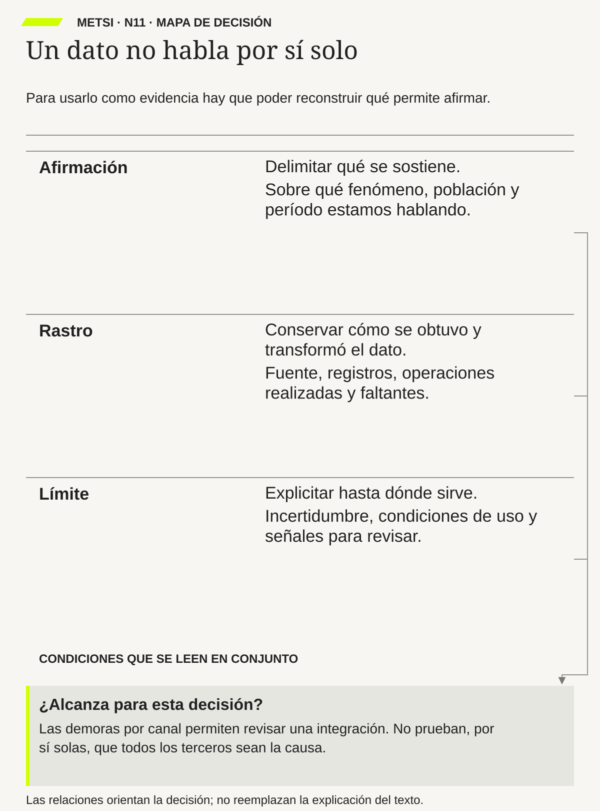

Mario Bunge
Emergencia y convergencia: novedad cualitativa y unidad del conocimientoGedisa · 2004
Ayuda a distinguir una explicación de una etiqueta: obliga a precisar conceptos, relaciones y evidencia que podría ponerlos en cuestión.

Un dato sostiene una afirmación cuando conserva fenómeno, población, reglas, transformaciones y decisión.
Cuándo un dato permite sostener una afirmación
Ruta priorizada: 1 h 20 min a 1 h 40 min. Núcleo de lectura: 60 a 75 min; preparación: 20 a 25 min. Las extensiones agregan 30 a 45 min y profundizan el recorrido.

Nota. SIN NUM. identifica aparatos de orientación y referencia.
Seis referentes y las obras principales utilizadas para construir N11.
Ayuda a distinguir una explicación de una etiqueta: obliga a precisar conceptos, relaciones y evidencia que podría ponerlos en cuestión.

Permite mirar qué compromisos coordina un registro: quién promete, quién actúa y qué respuesta corresponde si no se cumple.

Aporta una mirada sobre los modelos como simplificaciones. Su utilidad se evalúa según la pregunta, sin pedirles que contengan toda la realidad.

Coautora de la guía de NIST de 2024 para seleccionar y evaluar medidas de seguridad de la información, utilizada aquí para pensar la construcción y el uso de una medida.

Ayuda a separar errores por quiénes quedan representados de errores por cómo se pregunta o mide, una distinción útil también al revisar registros operativos.

Permite preguntar si un flujo de información es apropiado para su contexto. Tener acceso a un dato no justifica cualquier uso.
N11 no resume estas fuentes ni las convierte en receta. Las pone en tensión para construir juicio profesional.
¿Cómo saber si un dato realmente respalda lo que estamos diciendo y si alcanza para tomar la decisión que tenemos por delante?

La exactitud es necesaria, pero no alcanza para volver pertinente, suficiente y vigente una evidencia.
Una universidad presenta un tablero nuevo: «El 97 % de las solicitudes se resolvió dentro del plazo». Parece una excelente noticia. El sistema se instaló hace tres meses y las autoridades querían que los estudiantes recibieran respuestas más rápidas. El proveedor incorpora el porcentaje a su informe. Todos están listos para hablar de éxito.
La escena es ficticia, pero la pregunta es muy concreta. Una coordinadora quiere saber qué significa «se resolvió». El analista muestra el cálculo: contó las solicitudes que pasaron al estado «cerrada» antes de cinco días hábiles. Hasta ahí la operación parece clara. El problema aparece al visitar las oficinas.
En una, cerrar significa terminar el trámite. En otra, significa enviarlo a un área distinta. En una tercera se cierra después de mandar un mensaje que pide documentación. Para el tablero los tres casos son iguales. Para el estudiante, uno terminó, otro sigue esperando y otro todavía necesita hacer algo.
La coordinadora revisa expedientes. Encuentra solicitudes que se reabren al día siguiente. Algunas personas enviaron el mismo pedido dos veces porque no recibieron confirmación. Los correos que todavía no fueron cargados no aparecen. Además, el reloj empieza cuando la oficina registra la solicitud, no cuando la persona la envía. Parte de la espera queda afuera.
Entonces, ¿el 97 % es falso? No necesariamente. Puede estar bien calculado para las filas incluidas y para el estado que se eligió. Lo que no está justificado es usarlo para decir que el 97 % de los estudiantes resolvió su necesidad a tiempo. La cuenta y la conclusión hablan de cosas diferentes.
Ésta es una dificultad central de los sistemas de información. Un registro no contiene toda la experiencia que queremos conocer. Contiene lo que alguien decidió capturar mediante ciertas reglas. Para pasar del registro a una afirmación sobre el servicio tenemos que revisar esas reglas y lo que dejan afuera.
El equipo propone unificar los estados y medir desde la recepción original. Es un avance, pero todavía debe acordar otras decisiones. ¿Cómo se cuentan los pedidos duplicados? ¿Qué ocurre con una solicitud que necesita información adicional? ¿Cuándo termina realmente? ¿Se incluyen los canales manuales? Si el mes acaba hoy, ¿todas las solicitudes recientes tuvieron cinco días para completar su recorrido? No podemos juzgar como atrasado o resuelto un caso que todavía no tuvo el mismo tiempo de seguimiento.
La discusión importa aún más cuando aparece una decisión de gestión: reducir personal porque, según el tablero, el sistema ya absorbió la demanda. Para detectar dónde conviene investigar puede alcanzar una señal incompleta. Para quitar una capacidad de atención necesitamos saber qué trabajo sigue existiendo, aunque el indicador no lo muestre.
El informe se corrige. Ya no dice «97 % de resolución efectiva». Dice que el porcentaje se refiere a solicitudes registradas que alcanzaron cierto estado, y aclara que ese estado todavía tiene significados distintos. También explica qué se revisará antes de usarlo para evaluar la atención.
La nueva formulación es menos espectacular. A cambio, permite actuar mejor: revisar estados, incorporar canales omitidos, seguir reaperturas y comprobar qué espera realmente una persona. No tira el tablero a la basura. Lo ubica dentro de lo que puede sostener.
N11 trata de ese trabajo. No propone desconfiar de todos los números. Propone saber cómo se construyeron, a qué pregunta responden y qué paso adicional necesitamos antes de decidir con ellos.
N10 dejó una pregunta abierta en Hotel Horizonte: ¿por qué algunas llegadas obligan a corregir lo que se prometió? El equipo distinguió varias explicaciones y autorizó una investigación acotada. Todavía no había decidido que cambiar el PMS fuera la respuesta.

Ahora Federico Müller prepara una extracción de tres meses. En los datos del caso didáctico, las reservas de terceros muestran once minutos más de tiempo medio que las directas. Además, el 32 % registra alguna corrección, frente al 9 % de las directas. Alguien concluye: «Las agencias son el problema».
Lucía Ferreyra pide revisar qué cuenta como corrección. En Recepción se registra así una modificación dentro del PMS. Pero llamar a Comercial, consultar a Housekeeping o explicar una condición al huésped no siempre deja la misma marca. Algunas reservas directas se arreglan antes de la llegada. En cambio, muchas reservas de terceros entran en una lista automática de pendientes que conserva más rastros.
Podemos estar viendo dos diferencias a la vez: una diferencia de servicio y otra de registro. Si una clase de casos se observa con más detalle, parecerá tener más incidentes aunque parte de la actividad de la otra esté fuera del sistema. El tablero no permite separar ambas cosas por sí solo.
Federico no hizo mal en calcular. Lucía no invalida los datos por aportar una observación. Juntos necesitan precisar qué significa el resultado. ¿Comparamos espera del huésped o tiempo dentro del PMS? ¿Correcciones de la reserva o todo el trabajo necesario para cumplirla? ¿Canal original o canal después de una modificación?
HH-11 será un expediente breve para responder esas preguntas. Relacionará tres afirmaciones con su evidencia y con la decisión que podrían permitir. La misma tabla podrá respaldar una comparación limitada, dejar una explicación como hipótesis y no alcanzar todavía para justificar una automatización.
Un dato ayuda a sostener una afirmación cuando sabemos qué representa y por qué sirve para esa pregunta. Que venga de un sistema, tenga muchos decimales o aparezca en miles de filas no lo vuelve suficiente para cualquier conclusión.
Un ejemplo cotidiano: una aplicación informa que un colectivo tardó veinte minutos entre dos puntos. El dato puede ser exacto. Pero si querés saber cuánto tardó una persona en llegar al trabajo, también importa cuánto esperó en la parada, si tuvo que combinar y cuánto caminó al final. El problema no es que el dato sea malo en general. Es que representa sólo una parte de lo que querés afirmar.
Para evaluar su alcance necesitamos conocer la unidad que se contó, los casos incluidos, el período, el origen y las operaciones realizadas. No es lo mismo contar reservas que huéspedes; medir desde la llegada que desde la apertura de una pantalla; observar un mes tranquilo que una temporada de alta demanda.
También importa la frase que queremos sostener. «Ayer ocurrió una asignación incorrecta» necesita evidencia de ese episodio. «Las asignaciones incorrectas son frecuentes» necesita una base para estimar cuántas ocurren. «El canal causa esas asignaciones» requiere investigar otras explicaciones. Cambiar unas pocas palabras puede aumentar mucho lo que tenemos que demostrar.
Wang y Strong muestran por qué la calidad no se reduce a exactitud. ISO/IEC 25012 ofrece un marco para examinarla según necesidades y condiciones de uso. Box y Draper recuerdan el valor y los límites de simplificar mediante modelos. El punto común que usamos aquí es práctico: una representación sirve para ciertas preguntas, no para todas.
No debemos irnos al extremo opuesto. Un dato imperfecto puede alcanzar para abrir una investigación o para detener una prueba que está produciendo daño. No necesitamos calcular la frecuencia anual de una falla para reconocer un episodio grave y proteger a quienes podrían verse afectados.
En Hotel Horizonte, una extracción puede justificar mirar con más atención dos integraciones. No necesariamente justifica afirmar que todos los canales de terceros son malos ni permitir que un agente rechace reservas. La fuerza necesaria de la evidencia cambia con la consecuencia de equivocarse.
La propuesta de N11 es conservar el camino entre lo ocurrido, lo registrado, lo calculado y lo decidido. Ese camino permite hacer preguntas, detectar saltos y corregir. El rigor no está en usar un tono categórico: está en afirmar hasta donde la evidencia permite y aclarar qué falta para avanzar más.

N10 eligió una dificultad que vale la pena investigar. N11 toma las afirmaciones que usamos para explicarla y pregunta qué las respalda. «Las reservas de terceros necesitan más reparación» no pide la misma evidencia que «dos áreas entienden distinto la disponibilidad». Una necesita una comparación adecuada; la otra puede comenzar por reconstruir definiciones y episodios.
N04 ya había separado observaciones, relatos, datos e hipótesis. Ahora miramos más de cerca cómo algo se convierte en un dato. ¿Qué debió hacer el personal para que apareciera una fila? ¿Qué situaciones no tenían un campo donde registrarse? ¿Quién cambió una categoría antes de que llegara al tablero?
El producto HH-11 no reemplaza la base ni exige copiarla entera en un informe. Guarda la explicación necesaria para usarla: qué afirmamos, con qué material, con qué límites y para qué decisión. También permite localizar el detalle cuando alguien necesita revisarlo.
N12 profundizará las diferencias entre que algo haya ocurrido, que figure un estado y que alguien haya pedido una acción. Aquí dejamos preparadas las preguntas. Registrar «confirmada» puede representar una decisión distinta de comprobar que una habitación está en condiciones de entregarse. Esa diferencia tiene que estar aclarada antes de contar ambas cosas como el mismo resultado.
Una temperatura, una foto, una respuesta de encuesta y una hora de ingreso son datos de formas diferentes. Todos representan alguna propiedad o situación. Ninguno contiene por sí solo todo lo que pasó.
Si una encuesta pide elegir entre «satisfecho» e «insatisfecho», la respuesta conserva una valoración dentro de esas opciones. No registra necesariamente la causa. Si el sistema permite anotar sólo «resuelto», no sabremos si terminó el trabajo, si se derivó o si alguien cerró para cumplir el plazo. El diseño de las categorías forma parte de la producción del dato.
Esto no significa que cualquier interpretación sea válida. Podemos revisar cómo se capturó la información, comparar con episodios y decidir qué preguntas puede responder. Precisamente porque el dato no es el fenómeno completo, necesitamos esa revisión.
Una dirección puede ser suficiente para emitir una factura y no para coordinar una entrega que requiere saber por dónde se accede. Una respuesta técnica de medio segundo puede servir para evaluar una API y no describir los veinte minutos que la persona pasó resolviendo pasos manuales. La adecuación depende del uso.
Antes de iniciar una limpieza masiva de información, preguntá qué decisión necesita apoyo. Podés descubrir que el campo con peor formato no importa para esa decisión y que otro, perfectamente completo, usa una definición equivocada. Mejorar la calidad no consiste únicamente en llenar vacíos.
Existencia: «Ayer una huésped esperó cuarenta minutos». Para sostenerlo necesitamos identificar el episodio y cómo se midió la espera. Un caso bien documentado alcanza para decir que ocurrió. No alcanza para decir que es habitual.
Descripción: «En las llegadas observadas este mes, la espera mediana fue de veinte minutos». Ahora necesitamos definir qué llegadas observamos, cuáles quedaron afuera y cómo calculamos. La afirmación habla de un conjunto y un período, no de un caso aislado.
Comparación: «Las reservas de terceros tuvieron más demora que las directas». Necesitamos que ambos grupos se midan de manera compatible. Si un reloj empieza al entrar al hotel y otro al abrir la reserva, la diferencia puede venir de la regla de medición.
Relación o asociación: «Cuando hay más discrepancias registradas, también aumenta la espera». Estamos diciendo que dos variables cambian juntas. Las discrepancias podrían producir parte de la espera, pero también podrían aumentar ambas por una tercera condición, como una llegada grupal difícil.
Causalidad: «Esta discrepancia contribuye a producir la demora». La afirmación es más exigente: debemos explicar el proceso y contrastar otras causas. No basta con poner dos curvas parecidas una al lado de la otra.
Predicción: «Con cierta información podemos anticipar qué llegadas necesitarán apoyo». Una predicción se evalúa en casos nuevos, no sólo en los que se usaron para construirla. Puede predecir sin explicar la causa. Y predecir dificultad no decide qué trato merece la persona.
No es una escalera donde causalidad siempre vale más que descripción. Para asignar apoyo temporal puede alcanzar una buena descripción de una cola. Para afirmar que un control nunca falla, un solo contraejemplo verificado puede ser decisivo. El tipo de pregunta fija el tipo de prueba.
«Buena atención» es una idea comprensible, pero no se mide directamente como la longitud de una mesa. Puede incluir rapidez, claridad, trato, resolución y posibilidad de ayuda. A esos conceptos que reúnen varias dimensiones los llamamos constructos.
Para estudiarlos elegimos señales y reglas. Ese paso se llama operacionalización. El término suena difícil, pero la pregunta es simple: ¿qué vamos a observar para reconocer lo que nos interesa?
En el hotel podemos medir una llegada por el tiempo hasta emitir la llave. Otra opción es medir hasta que la persona recibe acceso a una habitación adecuada, registrando si hubo que corregir después. La primera regla es más fácil porque el sistema ya guarda el evento. La segunda está más cerca de la promesa, pero exige más información. La elección depende de qué afirmamos.
Una medida puede ser confiable sin ser válida para cierto uso. Confiable significa que da resultados consistentes en condiciones comparables. Válida significa que representa adecuadamente lo que queremos conocer. Si todas las oficinas cierran al derivar, el código puede aplicarse de forma consistente; aun así, no mide resolución final.
Pensá también en una balanza que suma siempre tres kilos. Repetiría el resultado de manera consistente, pero tendría un sesgo de exactitud. No alcanza con obtener la misma respuesta muchas veces. Debemos evaluar qué clase de error puede conservar el procedimiento.
Para revisar una operacionalización conviene probar casos límite. ¿Qué pasa si se emite una llave que no abre? ¿Si la habitación se cambia diez minutos después? ¿Si la persona necesita ayuda y la consigue por fuera del canal? Esos casos muestran si nuestra definición de éxito conserva lo que prometimos medir.
La unidad de análisis es aquello que contamos o comparamos. Una reserva puede incluir cuatro personas y dos habitaciones. Si hay tres modificaciones en la misma reserva, no son necesariamente tres llegadas fallidas. Antes de calcular debemos saber si contamos personas, reservas, habitaciones o modificaciones.
La población es el conjunto al que queremos referirnos. Puede ser todas las llegadas del mes o sólo las registradas en un canal. Tener miles de filas no garantiza cubrirlo todo. Si no aparecen los casos atendidos por teléfono, la base puede ser grande y dejar afuera precisamente la dificultad que buscamos.
El período define cuándo observamos. Comparar un mes de temporada baja con uno de alta demanda mezcla condiciones. No vuelve imposible la comparación, pero exige reconocer qué cambió. También importa que los casos hayan tenido tiempo suficiente para mostrar el resultado: una llegada aún abierta no equivale a una llegada sin problemas.
La granularidad es el nivel de detalle. Un promedio mensual puede ocultar una congestión que ocurre todos los días durante media hora. Registrar cada segundo puede producir mucho ruido si la decisión se toma por turno. Elegimos el detalle que permite ver el patrón relevante, no el máximo disponible por costumbre.
Estas cuatro decisiones deberían poder explicarse antes de mostrar el gráfico. Si recién aparecen cuando alguien cuestiona el resultado, pueden terminar funcionando como excusas. Documentarlas desde el comienzo permite comparar lo que se quiso medir con lo que realmente se calculó.
Un porcentaje divide una cantidad por otra. El número de abajo, el denominador, indica respecto de qué conjunto hablamos. «Doce correcciones» no dice lo mismo sobre un hotel con veinte llegadas que sobre uno con doscientas.
Hagamos una cuenta hipotética con reglas explícitas. Partimos de cien registros de reserva. Diez corresponden a cancelaciones previas. Cinco filas adicionales eran duplicados que se unifican. Quedan ochenta y cinco llegadas distintas. Durante ellas se registran doce modificaciones: cuatro son cambios voluntarios de preferencia sin un error previo y ocho corrigen un incumplimiento. Supongamos, además, que esas ocho pertenecen a ocho llegadas diferentes.
Doce sobre cien es el 12 %, pero mezcla modificaciones con registros iniciales. Ocho sobre ochenta y cinco es aproximadamente el 9,4 % de llegadas con el tipo de corrección que definimos. Si dos de esas ocho correcciones correspondieran a la misma llegada, habría que cambiar el numerador para medir llegadas afectadas. La cuenta depende de la unidad y de la pregunta.
No hay un denominador correcto para todas las preguntas. Podemos querer estudiar cancelaciones sobre reservas creadas, modificaciones por llegada o personas afectadas. Lo que no podemos hacer es elegir el que da una cifra más cómoda y conservar el mismo título.
Otro ejemplo: los incidentes suben de dos a tres. Es un aumento del 50 % en cantidad. Si las oportunidades pasaron de cien a doscientas, la tasa bajó de 2 % a 1,5 %. Ambas cuentas son posibles; hablan de aspectos diferentes. Un informe responsable muestra el contexto, especialmente cuando los números son pequeños.
Podemos revisar varias dimensiones. Exactitud: el valor coincide suficientemente con lo que pretende registrar. Completitud: están los datos necesarios. Consistencia: no aparecen contradicciones que impidan el uso. Actualidad: la información sigue siendo pertinente para el momento de decidir. Unicidad: no contamos dos veces lo mismo. Validez de formato: el campo cumple su regla técnica. Accesibilidad y relevancia: quienes deben usarlo pueden hacerlo y el dato responde a su necesidad.
La validez de formato no es lo mismo que la validez de una medida. «Cerrada» puede ser una opción perfectamente admitida por el sistema y representar mal la resolución del trámite. Conviene mantener separados esos dos usos de la palabra.
No todas las dimensiones pesan igual. Para avisar una contingencia necesitamos un contacto vigente. Para calcular una tasa necesitamos unidades bien identificadas y una cobertura adecuada. Para reconstruir una asignación importa qué información estaba disponible en ese momento, no sólo la versión correcta que tenemos hoy.
La guía de medición de NIST de 2024 incluida en las referencias trabaja en seguridad de la información; el Research Data Framework lo hace desde el ciclo de vida de los datos de investigación. No son manuales de hotelería. Podemos aprovechar su atención a planificación, recolección, evaluación y documentación sin afirmar que trasladan automáticamente todos sus procedimientos a este caso.
La suficiencia no es permiso para aceptar cualquier error. Debemos preguntar si los defectos plausibles podrían cambiar la decisión. Si sí, hay que corregir, obtener otra evidencia o limitar la acción. Si no, podemos avanzar declarando el margen y revisando cuando corresponda.
Federico y Lucía separan tres frases que antes aparecían juntas en la conversación.
A. «En estos registros, las llegadas de terceros tienen mayor tiempo medio entre el inicio formal del ingreso y la emisión de acceso». Es una comparación descriptiva. Antes de sostenerla hay que comprobar que los relojes y los grupos sean comparables, declarar exclusiones y mostrar algo más que el promedio. Todavía no describe toda la espera del huésped.
B. «Los canales de terceros producen la demora». Es una explicación causal. La extracción no alcanza. Los grupos pueden diferir en horario, documentación, pago o necesidades de asistencia. Además, puede registrarse más trabajo en unos que en otros. Hay que distinguir esas alternativas.
C. «Un agente de IA reducirá la demora sin aumentar errores». Es una hipótesis sobre una intervención todavía no probada. Necesita una tarea precisa, condiciones, comparación y protecciones. La diferencia observada entre canales no demuestra que esa tecnología tenga el efecto esperado.
No es un cambio de datos; es un cambio de alcance. HH-11 evita convertir A en B y B en C sin hacer el trabajo intermedio. Puede autorizar revisar la medición, investigar un mecanismo y diseñar una prueba. No convierte una tabla en permiso automático para comprar o delegar decisiones.
La procedencia es la historia de producción de un dato. No se reduce al nombre del archivo o de la base. Incluye quién lo generó, mediante qué actividad, qué cambios recibió y qué versión estamos usando.

El modelo PROV del W3C organiza esa historia mediante entidades, actividades y agentes. Una entidad puede ser una extracción de reservas; una actividad, la clasificación de sus canales; un agente, una persona o un sistema que interviene. El vocabulario ayuda a describir relaciones sin exigir una herramienta específica.
En Hotel Horizonte, «canal: tercero» pudo venir de una agencia, pasar por una integración y ser corregido después por Recepción. Si sólo conservamos el valor final, no sabemos qué veía el equipo al llegar el huésped. Podemos necesitar ambas cosas: una clasificación corregida para analizar y el registro previo para reconstruir una decisión.
Conviene separar fuente, custodia, transformación y autoridad. La fuente origina una observación o declaración. La custodia la almacena. La transformación cambia su representación. La autoridad determina qué decisión institucional puede habilitar. Que un proveedor guarde «habitación disponible» no le da por sí mismo autoridad para declarar que puede entregarse.
Conocer la procedencia no garantiza verdad. Una fuente identificada puede equivocarse. Pero permite evaluar el error, consultar el contexto y corregir sin inventar el origen. Sin esa historia, una cifra puede circular de informe en informe hasta parecer independiente de las decisiones que la produjeron.
Antes de llegar al tablero, los datos suelen pasar por varias operaciones. Filtrar elige qué casos quedan. Unir relaciona tablas. Deduplicar intenta eliminar registros repetidos. Clasificar asigna categorías. Imputar completa un valor faltante mediante una regla. Agregar reúne varios valores en un resumen.
Cada operación puede ser útil y puede introducir un problema. Unir por correo puede confundir a personas que comparten una dirección. Eliminar reservas con igual apellido y fecha puede borrar dos reservas legítimas. Completar una hora faltante con la mediana permite calcular, pero ese valor no pasa a ser una observación real por estar dentro de la tabla.
Supongamos que faltan horas de cierre justo en las llegadas más difíciles. Si las completamos con el tiempo habitual, el promedio parecerá mejor de lo que sabemos. Si las excluimos, también podemos ocultarlas. Hace falta estudiar por qué faltan, mostrar el alcance de la ausencia y evaluar cuánto cambia la conclusión bajo reglas razonables.
Una transformación importante debe conservar sus entradas, regla, versión, fecha, salida y casos que no pudo tratar. No para imprimir todo en el informe principal, sino para que otra persona pueda reconstruirlo. Si cambió la definición de «corrección», debemos marcar el cambio antes de comparar meses.
También debemos distinguir cálculo e inferencia. Sumar cobros es una operación sobre importes. Etiquetar una reserva como «riesgosa» agrega una interpretación basada en criterios. Aunque ambas aparezcan como columnas, la segunda necesita evaluación de errores, límites de uso y posibilidad de revisión.
Una encuesta de satisfacción enviada al final de un trámite no incluye necesariamente a quienes abandonaron antes. Un registro de reclamos incluye a quienes pudieron y quisieron reclamar. Un sistema de atención guarda lo que se atendió dentro de sus canales, no todo el trabajo de la organización.
Hay sesgo de selección cuando la posibilidad de quedar registrado se relaciona con aquello que queremos estudiar. Si los casos más difíciles abandonan antes de responder, la satisfacción puede verse mejor. No se corrige simplemente acumulando más respuestas del mismo tipo.
Groves y Lyberg, desde la metodología de encuestas, distinguen problemas de representación y problemas de medición. Podemos preguntarles con exactitud a las personas equivocadas para nuestra población. También podemos seleccionar una población adecuada y hacer una pregunta que mida mal. Son errores distintos.
Los registros operativos tienen dificultades parecidas, aunque no sean encuestas. Una integración caída deja fuera un canal. Un campo opcional puede completarse sólo cuando hay tiempo. Un turno puede registrar reparaciones y otro resolverlas por teléfono. Antes de comparar rendimiento, hay que examinar esas diferencias.
No existe una solución universal. A veces conviene ampliar canales; otras, observar deliberadamente casos ausentes, contrastar fuentes o limitar la afirmación. Una corrección estadística requiere supuestos y datos que la sostengan. No podemos recuperar automáticamente experiencias que nunca tuvieron posibilidad de entrar al registro.
Una hora de acceso vacía puede significar que la persona no ingresó. También puede indicar que se usó una llave física, que falló la transmisión o que la reserva se canceló. Escribir cero en todos los casos convierte historias diferentes en una misma duración.
Excluir los vacíos tampoco es neutral. Si las llegadas más problemáticas son las que no tienen cierre, calcular sólo las completas puede ocultar la dificultad. El informe debe mostrar cuántos casos faltan y qué sabemos sobre ellos.
La práctica mínima es distinguir las razones relevantes: no aplica, no observado, pendiente, falla de captura o motivo desconocido. No hace falta inventar una causa para cada fila. «No sabemos» es más útil que una clasificación falsa, siempre que se explique cómo limita el uso.
Además, la falta puede ser información. Si Housekeeping no logra registrar cierto estado porque la pantalla no lo permite, el vacío revela una limitación del sistema. Completarlo por detrás puede mejorar una planilla y dejar intacto el problema de trabajo.
En un ejemplo didáctico, una habitación queda limpia a las 13:40. La persona lo registra a las 13:55. Recepción recibe la actualización a las 14:10. Son tres tiempos: el hecho, su registro y su disponibilidad para quien decide.
Si queremos estudiar el trabajo de limpieza, la hora de sincronización no representa su final. Si queremos reconstruir qué sabía Recepción a las 14:00, el dato que llegó a las 14:10 todavía no estaba disponible. Y «limpia» no prueba por sí solo que la habitación estuviera asignable: puede existir otra restricción.
Corregir hoy la hora original puede mejorar la información histórica. Pero si borramos la versión previa, perderemos qué se sabía cuando se tomó la decisión. En usos relevantes conviene conservar ambas perspectivas: cuándo ocurrió algo y cuándo fue conocido o reconocido.
Los relojes también necesitan compatibilidad. Diferencias de zona horaria, sincronización o resolución pueden alterar una secuencia. No hace falta resolver todos los detalles temporales de la organización para cualquier análisis. Sí aclarar cuáles importan antes de atribuir una demora o una responsabilidad.
Hagamos una cuenta completa. En una situación ficticia hay cien llegadas: noventa habituales y diez que requieren asistencia. Antes, las primeras demoran once minutos en promedio y las segundas veintiuno. El total es 990 más 210: 1.200 minutos. Dividido por cien da doce minutos por llegada.
Después, mantenemos la misma composición para comparar. Las noventa habituales pasan a siete minutos y las otras diez a treinta y siete. El total es 630 más 370: 1.000 minutos. El promedio general baja a diez. Sin embargo, quienes requieren asistencia esperan dieciséis minutos más que antes.
La cuenta no está mal. La frase «todas las personas reciben una atención mejor» sí excedería lo que muestra. Necesitamos observar la distribución y las diferencias que importan para la decisión.
La mediana señala el centro de los casos ordenados. Los percentiles permiten ubicar tramos de la distribución, como los casos más lentos. La dispersión muestra cuánto varían. Son ayudas, no reemplazos del razonamiento. Ninguna cifra dice por sí sola si una espera es aceptable para una situación concreta.
Tampoco conviene separar por cada atributo disponible hasta encontrar una diferencia llamativa. Podemos producir asociaciones casuales o exponer información sensible. Elegimos grupos por una pregunta justificada, con datos suficientes y protecciones. Luego contrastamos la síntesis con episodios que permitan entender qué ocurre.
Dos áreas informan «tiempo de resolución». Una empieza cuando recibe el pedido; otra, cuando alguien lo toma. Una termina al derivar; otra, cuando la persona confirma que obtuvo respuesta. El nombre coincide, pero las medidas no.
También puede cambiar la composición. Si el hotel pasa los ingresos más sencillos al autoservicio, en Recepción quedarán proporcionalmente más casos complejos. Su promedio puede subir sin que el personal haya empeorado. Hay que mirar qué cambió en el conjunto, no premiar o castigar una cifra aislada.
Para comparar antes y después debemos preguntar qué más ocurrió: demanda, turnos, reglas, canales o criterios de registro. Un mejor resultado en temporada baja no demuestra por sí solo el efecto de una intervención. La pregunta de fondo es qué habría pasado sin ella; ése es el razonamiento contrafáctico.
No siempre podemos construir una comparación ideal ni hacer un experimento. Podemos usar períodos, casos y conocimiento del proceso con límites explícitos. Lo que no corresponde es presentar una coincidencia temporal como demostración causal sólo porque necesitamos cerrar el informe.
Informar 11,347 minutos no agrega exactitud si nadie sabe cuándo empezó la espera. Los decimales vienen de una operación matemática; no reparan una captura débil. Conviene usar una precisión coherente con el instrumento y con la decisión.
La incertidumbre puede venir de casos faltantes, diferencias de captura, clasificaciones dudosas, variación temporal o una muestra pequeña. No siempre se resume con un único intervalo. Un intervalo estadístico no soluciona que el reloj empiece en el lugar equivocado.
Podemos decir «en los casos auditados observamos una diferencia», «el patrón es compatible con esta explicación» o «todavía no pudimos distinguir estas causas». Son grados diferentes de afirmación. No hace falta un lenguaje dubitativo en cada oración; hace falta no decir «demuestra» cuando sólo tenemos una pista.
La pregunta útil es qué incertidumbre podría cambiar lo que haremos. Si una clasificación dudosa afecta justamente a los casos que justifican cerrar un canal, hay que revisarla antes. Si una pequeña variación no cambia la necesidad de apoyo temporal, quizá podamos actuar mientras mejoramos la medición.
El PMS dice disponible, Housekeeping dice limpieza pendiente y la cerradura muestra un acceso posterior. No conviene elegir «el sistema oficial» y borrar lo demás sin entenderlo. Quizá representan condiciones distintas o momentos distintos. Quizá una fuente está equivocada. La diferencia necesita una explicación.
Triangular significa contrastar fuentes para entender coincidencias y diferencias. No significa contar votos. Tres tableros que copian la misma base no son tres confirmaciones independientes.
Una entrevista puede revelar una llamada que el registro no guardó. Un registro puede mostrar que una secuencia ocurrió distinto de como se recuerda. El objetivo no es declarar ganador al dato técnico o al testimonio. Es reconstruir el episodio con sus límites y buscar la evidencia adicional que importa.
Una vez comprendida la divergencia podremos decidir si corresponde corregir, mantener estados distintos o cambiar una regla. Limpiar antes de entender puede eliminar justamente la señal que explicaba la falla.
Una herramienta puede leer reclamos y clasificarlos por tema. Puede ahorrar trabajo y permitir revisar más casos. Pero su resultado agrega una interpretación, no una observación independiente. Si clasifica «me respondieron rapidísimo, lástima que no resolvieron nada» como satisfacción por velocidad, el error puede pasar al tablero sin que nadie vea el texto original.
Los resúmenes tienen otro riesgo. Pueden conservar el sentido general y omitir la condición que cambia la decisión: «aceptó la habitación, siempre que hubiera apoyo disponible». Si desaparece la segunda parte, el registro puede parecer un consentimiento sin condición. La buena redacción no demuestra fidelidad.
Por eso necesitamos saber qué tarea hizo la herramienta, sobre qué entradas, con qué versión y mediante qué verificación. La revisión debe incluir casos difíciles o poco frecuentes, no sólo los que confirman que suele funcionar. Una tasa global alta puede ocultar errores concentrados precisamente en las situaciones que más cuidado necesitan.
Los datos sintéticos son datos construidos para simular o representar ciertas propiedades. Pueden servir para probar un sistema sin usar directamente todos los registros personales. Pero no son episodios observados del hotel. Deben mantenerse identificados y evaluarse según el propósito; generarlos no garantiza por sí solo privacidad ni realismo suficiente.
El AI RMF de NIST, su perfil de IA generativa y la familia ISO/IEC 5259 ofrecen referencias para trabajar riesgos y calidad a lo largo del uso de datos y modelos. No convierten una lista de controles en una certificación automática de la afirmación. Seguimos necesitando evaluar entradas, transformaciones, errores y consecuencias en el caso concreto.
El Reglamento europeo de IA incluido en la bibliografía también trata responsabilidades según categorías y usos. No se extrapolan aquí obligaciones jurídicas a cualquier organización: su aplicación requiere examinar el ámbito y la situación correspondientes. Para el razonamiento de N11, la idea relevante es que una salida automatizada no elimina la responsabilidad de verificar ni de permitir una revisión adecuada.
En HH-11 debemos marcar si una clasificación fue realizada por una persona, por una herramienta o mediante ambas. También debemos distinguir si se usó como pista para investigar o como fundamento decisivo. No alcanza con agregar «revisado por humano» si esa persona no tuvo tiempo, información ni autoridad para objetar.

No siempre hay tiempo ni posibilidad de medir todo.
Federico y Lucía vuelven a la extracción. En la continuación ficticia del caso encuentran cinco reglas que afectan la interpretación. El inicio se toma del primer cambio de estado dentro del PMS. El final es la emisión de tarjeta. El canal corresponde al valor final, aunque haya sido corregido. Los casos sin cierre quedan fuera del promedio. Las reservas fusionadas conservan un solo identificador sin mostrar en el tablero todas sus relaciones previas.
Ninguna regla es absurda por definición. Pueden servir para estudiar una operación dentro de la aplicación. El problema es usar el resultado para describir sin límites toda la espera del huésped. Hay trabajo antes, después y fuera de esos eventos.
El equipo revisa una selección de episodios. Agrega llegada observada y acceso efectivo cuando puede respaldarlos; donde no puede, conserva la ausencia. Distingue reparaciones posteriores a la llave. Reconstruye cambios de canal y clasifica razones de falta de cierre. No completa datos inventados para conseguir una tabla perfecta.
En este ejercicio, la diferencia entre grupos no desaparece, pero se reduce al comparar condiciones semejantes. Además, una parte importante de la dificultad observada se concentra en dos agencias que usan una definición de disponibilidad distinta. Eso orienta la investigación hacia un acuerdo de significado y una conciliación previa, no contra todos los terceros.
La conclusión queda acotada: durante el período y bajo las reglas auditadas, ciertas integraciones se asocian con más reparación, especialmente cuando no se comprueba antes la disponibilidad. Sigue pendiente cuánto explican otras condiciones, como pago o documentación. No declaramos causalidad completa sólo por haber mejorado el tablero.
Esta versión permite revisar esas integraciones y preparar una prueba. No autoriza bloquear todos los canales ni automatizar rechazos. El resultado de la auditoría no es una frase más contundente. Es una decisión mejor delimitada.
Hasta acá revisamos qué representa el dato y cómo llegó al tablero. Falta una pregunta: ¿alcanza para lo que queremos hacer? No existe una cantidad universal de filas ni un porcentaje de completitud que responda siempre. La suficiencia depende de la afirmación, las alternativas y las consecuencias.
Si queremos orientar una entrevista, una señal débil puede ser útil. Si queremos rechazar reservas, la misma señal es insuficiente. La diferencia no está en que una tabla cambie mágicamente de calidad; cambia el compromiso que pretendemos justificar con ella.
HH-11 reúne esas relaciones para que la decisión no quede desconectada de la evidencia. No se trata de conseguir un sello de «datos buenos», sino de explicar qué uso permiten y qué uso excede su alcance.
La ficha puede ocupar una página de síntesis con referencias al detalle necesario. Nueve preguntas orientan el trabajo.
1. ¿Qué afirmamos exactamente? Copiá una frase que se pueda examinar. «Los terceros son malos» mezcla una valoración con una generalización. «En este período, ciertos ingresos de dos agencias registraron más reparación» define mejor el alcance y deja preguntas verificables.
2. ¿Qué decisión depende de eso? Indicá si se busca investigar, probar, ampliar o comprometer una acción. La misma comparación puede justificar observar una integración y no cerrar un canal. Escribí también qué pasaría si la afirmación fuera errónea.
3. ¿Qué queremos conocer y cómo lo medimos? Separá el fenómeno de su representación. Queremos conocer espera hasta una solución adecuada; hoy tenemos tiempo desde apertura en el PMS hasta emisión de tarjeta. La diferencia no desaparece por elegir un nombre parecido.
4. ¿Qué contamos, a quiénes y cuándo? Definí unidad, población, período e inclusiones. Mostrá qué casos no pueden aparecer y cuáles aún no completaron su recorrido. Si la afirmación sólo vale para reservas registradas en ciertos canales, decilo.
5. ¿De dónde salieron los datos? Identificá fuentes, responsables, versiones y momentos de disponibilidad relevantes. No hace falta publicar datos personales en el informe; hace falta que quienes corresponda puedan verificar la procedencia con accesos adecuados.
6. ¿Qué operaciones realizamos? Registrá filtros, uniones, eliminación de duplicados, clasificaciones, valores completados y cálculos. Si una transformación cambia la población o agrega una inferencia, debe poder reconocerse. Conservá también los casos que no pudieron procesarse.
7. ¿Qué errores o incertidumbres importan? No hagas una lista genérica de todos los errores posibles. Señalá cuáles podrían cambiar la conclusión: cierres faltantes, relojes distintos, clasificación dudosa o cobertura incompleta. Mostrá cómo se evaluaron o qué falta hacer.
8. ¿Qué otra explicación sigue siendo razonable? La diferencia por canal puede relacionarse con condiciones de pago o con distinta visibilidad del trabajo. Identificá qué observación ayudaría a distinguirlas. Una rival no es una formalidad para completar.
9. ¿Para qué alcanza y cuándo revisamos? Cerrá con el uso autorizado, los límites y la condición de revisión. Por ejemplo: alcanza para una prueba de conciliación con dos agencias; no para rechazar automáticamente; se revisará si aparecen daños, cambios de población o evidencia que contradiga el mecanismo.
La ficha debe poder ser leída por quien decide y reconstruida por quien verifica. Si un cálculo importante sólo existe en la memoria de Federico, todavía hay una dependencia frágil. La documentación no reemplaza su criterio, pero permite que el trabajo continúe y pueda discutirse.
Podemos distinguir cuatro tipos de compromiso. No son etapas obligatorias de todos los proyectos; ayudan a comparar exigencias.
Explorar. Una señal parcial puede orientar una entrevista o una revisión de episodios. Debemos aclarar su limitación para no transformarla en diagnóstico. El costo de aprender de una hipótesis equivocada suele ser menor que el de ejecutarla a gran escala.
Probar. Una intervención acotada necesita una medición inicial, condiciones de seguridad, observación y una salida. Llamarla piloto no reduce sus riesgos automáticamente. Hay que saber qué personas quedan expuestas y qué haremos si aparece una falla.
Ampliar. Extender a más turnos o canales requiere comprobar que la experiencia inicial no dependió de una persona excepcional, de casos fáciles o de una asistencia imposible de sostener. También hay que observar si los efectos cambian entre grupos.
Comprometer. Retirar atención, firmar una dependencia prolongada o automatizar decisiones difíciles de reparar exige evidencia y controles más fuertes. No alcanza con que la prueba haya funcionado algunas veces. Importan cobertura, autoridad, posibilidad de impugnación y capacidad de reparación.
No debemos usar esta distinción para demorar acciones protectoras urgentes. Si una prueba está asignando habitaciones inadecuadas, puede ser razonable detenerla antes de calcular una tasa estable. La exigencia de evidencia debe considerar tanto el costo de actuar como el de no actuar.
Una prueba de sensibilidad consiste en cambiar supuestos plausibles y ver qué ocurre con la conclusión. No cambiamos reglas hasta conseguir el resultado deseado. Examinamos de qué depende lo que estamos diciendo.
En el hotel podemos recalcular separando las dos agencias más problemáticas, conservando las clasificaciones originales o mostrando distintos tratamientos justificados para cierres faltantes. También podemos comparar relojes, siempre que tengamos evidencia de sus diferencias y no inventemos horas para todos los casos.
Si pequeñas variaciones razonables invierten la comparación, la decisión depende de una convención frágil. Debemos limitar el alcance o buscar datos que resuelvan la duda. Si la diferencia persiste en varios escenarios pertinentes, gana respaldo, aunque eso no demuestre causalidad.
Puede ocurrir que la incertidumbre no cambie la acción. Si todas las estimaciones razonables muestran una espera importante en la misma franja y tenemos capacidad segura de apoyo temporal, quizá no necesitemos el minuto exacto para organizarlo. La precisión necesaria depende de dónde están las alternativas de decisión.
Lo contrario también es posible. Una diferencia pequeña puede importar mucho cuando una regla determina acceso, cobro o rechazo. No se evalúa sólo el tamaño numérico: se evalúa qué ocurre a cada lado de la decisión.
«Si la tasa supera el 5 %, intervenir» parece una regla técnica. Pero alguien eligió ese 5 % y debe explicar por qué. Puede responder a una obligación, una capacidad disponible, una comparación relevante o una tolerancia al riesgo. Esas razones deben mantenerse visibles.
Los umbrales también cambian el comportamiento. Si una oficina es evaluada sólo por cerrar antes de cinco días, puede comenzar a cerrar al derivar. La métrica deja de observar pasivamente: influye en lo que las personas hacen. El indicador mejora sin que necesariamente mejore el propósito.
En Hotel Horizonte, premiar ocupación sin observar reparaciones puede incentivar compromisos que después se resuelven a costa de Recepción. Premiar velocidad de ingreso sin verificar la habitación puede favorecer entregas prematuras. No significa que debamos eliminar toda métrica, sino acompañarla con condiciones y revisión.
Cathy O’Neil advierte sobre los daños que pueden producir modelos opacos cuando operan a escala y las personas afectadas tienen pocas posibilidades de discutirlos. La pregunta para HH-11 es concreta: ¿quién puede impugnar una clasificación?, ¿quién la revisa?, ¿qué ocurre mientras tanto?
Un umbral útil tiene fundamento, consecuencias conocidas y un responsable. Puede requerir actualización. No se vuelve neutral porque esté implementado como una condición dentro de un sistema.
Si otra persona usa las mismas entradas y reglas y obtiene un resultado consistente, hablamos de reproducibilidad en el sentido utilizado por las Academias Nacionales de Estados Unidos en su informe de 2019. Ayuda a detectar errores y a discutir sobre una base común.
Para lograrla necesitamos conservar versiones, parámetros y operaciones relevantes. Si el tablero recalcula el pasado con datos corregidos hoy, ya no necesariamente reproduce el resultado que se vio en la reunión anterior. Ambas versiones pueden tener utilidad, pero deben distinguirse.
La replicación plantea otra pregunta: con nuevos datos o un procedimiento independiente, ¿aparece un resultado compatible? En una organización no siempre podemos repetir las condiciones exactamente. Sí podemos contrastar otro período o revisar una muestra mediante observación, aclarando las diferencias.
Ninguna de las dos garantiza por sí sola validez. Podemos ejecutar dos veces una consulta que empieza el reloj demasiado tarde. También podemos repetir una medición consistente que deja afuera el mismo canal. Reproducir permite examinar el procedimiento; no decide si representa bien la promesa.
Además, necesitamos reconstruir la decisión: qué sabía el equipo entonces, qué supuestos aceptó, quién autorizó y qué habría cambiado su elección. El tablero actual no conserva necesariamente esa historia. El expediente debe relacionar la evidencia disponible con la acción tomada en su momento.
Al finalizar la auditoría del ejercicio, el equipo conserva tres afirmaciones con fuerzas distintas.
La primera es descriptiva: ciertas integraciones de terceros presentan más episodios de reparación en el período revisado. Se apoya en la extracción identificada, definiciones compatibles, tratamiento explícito de ausencias y episodios contrastados. Permite concentrar observación y trabajo en esas integraciones. No generaliza a todos los intermediarios.
La segunda propone un mecanismo: las diferencias sobre el significado de disponibilidad contribuyen a la reparación cuando no se concilian antes de la llegada. Hay rastros, reglas de canal y relatos que la sostienen. Pero siguen abiertas otras condiciones, como pago o documentación. Permite diseñar una prueba específica, no declarar que ya conocemos toda la causa.
La tercera anticipa un resultado: conciliar antes de la llegada podría reducir reparaciones sin aumentar rechazos equivocados. Eso todavía no ocurrió en la prueba. Debe escribirse como hipótesis, con qué se espera cambiar, cómo se observará y cuándo se detendrá.
Elena autoriza dos semanas de prueba con dos agencias. No autoriza rechazos automáticos. Federico y el equipo preparan la comparación; Lucía conserva la capacidad de resolver excepciones; Ricardo verifica que el trabajo previo sea sostenible; Mariela y Camila revisan los estados y compromisos que les corresponden.
Se registran el tiempo completo, correcciones posteriores, casos afectados y trabajo adicional. Si la mejora aparece únicamente porque se rechazan más reservas o porque el personal absorbe validaciones fuera del registro, no cumple el propósito. La protección no queda como una nota: cambia cómo se evalúa la prueba.
HH-11 no promete el resultado. Deja preparada una forma de aprender de él. Esa diferencia evita que, después, cualquier cifra favorable se use como confirmación de una decisión que en realidad nunca estuvo abierta a revisión.
En una situación hipotética, una facultad construye un modelo para anticipar abandono. Usa actividad del campus virtual, materias aprobadas y registros administrativos. En datos históricos acierta muchas clasificaciones. La institución propone ofrecer tutorías y, además, bloquear algunas inscripciones hasta que la persona asista a una entrevista.
Esas dos acciones no son equivalentes. Una invitación voluntaria a recibir apoyo tiene consecuencias distintas de impedir una inscripción. La capacidad predictiva del modelo no autoriza por sí sola ninguna de ellas; cada uso necesita examinar propósito, errores, trato y posibilidades de revisión.
Una persona puede tener poca actividad virtual porque trabaja con materiales descargados, cursa presencialmente o tiene problemas de conectividad. No toda ausencia significa desvinculación. También puede haber estudiantes que abandonaron sin dejar suficientes rastros para aparecer en la base. El modelo aprende de lo registrado, no de toda la vida universitaria.
Un falso positivo ocurre si se señala como futuro abandono a alguien que no abandonaría bajo las condiciones evaluadas. Un falso negativo ocurre si no se detecta un caso que sí lo haría. Importan las consecuencias de ambos, no sólo la proporción total de aciertos. Un contacto puede ser inútil o estigmatizante si se hace mal; un bloqueo puede crear una barrera que agrave la situación.
Para reformar horarios, becas o apoyos tampoco alcanza con predecir. Debemos investigar mecanismos: qué dificultades existen y qué cambios podrían ayudar. Una variable que predice no es necesariamente una causa que convenga modificar.
El caso permite transferir la disciplina de HH-11. Separá la afirmación predictiva de la decisión institucional. Revisá población, señales, errores, alternativas y autoridad. Un modelo puede tener utilidad estadística y usarse de una manera injustificada. La evidencia y la legitimidad están relacionadas, pero no son lo mismo.
Una política declara: «Ninguna reserva confirmada puede perderse durante una sincronización». El equipo reconstruye un episodio y comprueba que una reserva confirmada desapareció después de un reintento. Conserva el registro original, la secuencia y la recuperación manual. Un caso verificado contradice la palabra «ninguna».
Todavía no sabemos con qué frecuencia ocurre ni cuánto daño puede producir en toda la operación. Pero ya sabemos que el control no es absoluto. Responder «es sólo un caso» no resuelve la contradicción: confunde frecuencia con posibilidad.
El episodio puede justificar preservar evidencia, investigar y detener temporalmente una automatización según su riesgo. No hace falta esperar muchos casos para reconocer una falla que creíamos imposible. A la vez, no debemos usar ese único caso para inventar una tasa general.
Éste es el límite de la idea de que siempre necesitamos más datos. Lo decisivo es la relación entre evidencia y afirmación. Un caso puede ser insuficiente para una pregunta y suficiente para otra.
Las fuentes disponibles sirven para explorar, pero no deberían definir por comodidad lo que importa. Si queremos conocer la espera completa, no la reemplazamos por tiempo dentro de la aplicación sólo porque es fácil de extraer. Aclaramos la diferencia y decidimos qué información adicional vale obtener.
Coincidir con la fuente no alcanza si la fuente usa un estado que significa otra cosa. Revisá significado, cobertura y vigencia. La exactitud de la copia no corrige una interpretación equivocada.
Un millón de registros puede omitir a quienes no consiguen usar el canal. Antes de generalizar, preguntá quién tenía posibilidad de aparecer. El volumen no arregla una exclusión sistemática.
Si dos variables cambian juntas, considerá otras condiciones que puedan influir en ambas. Buscá secuencias y casos que ayuden a distinguir explicaciones. No elijas el verbo más fuerte para que el informe parezca concluyente.
Dos valores pueden representar momentos o autorizaciones diferentes. Si los unificás sin revisar, podés eliminar información importante. Primero reconstruí; después decidí qué corresponde corregir o mantener separado.
Ninguna visualización vuelve válido un reloj que empieza tarde para la pregunta planteada. Ajustá la medida antes de sofisticar el cálculo. Mostrá una precisión que puedas sostener.
Una clasificación o un resumen es una transformación. Conservá la entrada, la regla o versión relevante y la evaluación de errores. Si la fuente no afirma algo, la redacción convincente de la herramienta no lo vuelve un hecho.
Una observación acotada no necesita el mismo respaldo que una decisión difícil de reparar. Explicá qué error importa para el paso concreto. No uses la búsqueda de perfección para evitar actuar frente a una dificultad conocida.
Si premiamos cierres, algunas personas pueden cerrar antes. Si premiamos ocupación, pueden trasladar el riesgo a la llegada. Revisá cómo cambia el trabajo y qué protecciones evitan que cumplir la cifra desplace el propósito.

Quienes trabajan con sistemas no sólo consumen datos: ayudan a producirlos. Definir un campo obligatorio, un estado o una regla de fusión determina qué podremos ver después. Una decisión pequeña de interfaz puede hacer que una dificultad frecuente no tenga dónde registrarse.
La responsabilidad está distribuida. Producto define resultados y eventos; desarrollo implementa captura y transformaciones; Operaciones conoce excepciones; quienes atienden personas reconocen reparaciones invisibles; las áreas de seguridad y privacidad delimitan usos; Dirección decide qué compromisos autoriza. No se resuelve dejando toda la «calidad» al analista que recibe la base al final.
Una práctica sólida permite cuestionar y corregir. Si Mariela observa que «limpia» se está leyendo como «asignable», debe existir una vía para revisar la definición y sus usos. No alcanza con pedirle que cargue mejor el mismo campo.
El expediente no garantiza decisiones acertadas. Hace posible ver dónde se apoyan y qué cambiar cuando fallan. Esa capacidad es especialmente importante cuando una cifra circula entre áreas y pierde las advertencias con las que fue creada.
No siempre hay tiempo ni posibilidad de medir todo. En una contingencia se actúa con información parcial. Algunos hechos son raros y algunas poblaciones difíciles de observar. La respuesta es declarar qué incertidumbre aceptamos y limitar la acción, no fabricar una certeza que no tenemos.
Recoger más información tampoco es siempre mejor. Podemos aumentar costos, cargar al personal o invadir privacidad sin mejorar la decisión. Helen Nissenbaum propone examinar la adecuación de los flujos de información según contexto, actores, atributos y condiciones de transmisión. Que un dato esté disponible no significa que cualquier uso sea apropiado.
Ser auditable no exige publicar datos personales sin restricciones. Exige que existan responsabilidades, evidencia y accesos adecuados para revisar lo que corresponde. Podemos mostrar reglas y resultados agregados mientras protegemos registros identificables y habilitamos controles específicos.
Medir diferencias entre grupos también tiene riesgos. Puede ayudar a encontrar barreras y puede fijar etiquetas que estigmatizan. Necesitamos una finalidad clara, categorías justificadas, datos mínimos y formas de cuestionar decisiones. No se resuelve sólo con una técnica de anonimización.
Finalmente, una afirmación bien respaldada puede usarse para un fin injustificado. Saber predecir una dificultad no decide que deba negarse una oportunidad. N11 limita lo que podemos afirmar; no reemplaza las preguntas sobre poder y responsabilidad de N05 ni la decisión sobre qué queremos proteger.

HH-11 deja tres afirmaciones y sus respaldos. También deja una dificultad de representación: el tablero puede mezclar algo que ocurrió, un estado que alguien declaró y una acción que alguien pidió. Para interpretar los datos, necesitamos distinguirlos.
«Se emitió una llave» registra un hecho. «La habitación está asignable» declara una condición según reglas. «Asignar la habitación» solicita una acción. Ninguna frase equivale automáticamente a las otras. Además, importa quién puede pedir, confirmar o corregir.
N12 trabajará esas diferencias mediante eventos, estados, comandos, evidencia y autoridad. No se trata de agregar vocabulario por sí mismo. Se trata de que el modelo no permita leer una intención como un resultado ni una anotación como un permiso que nadie concedió.
Así continúa el recorrido: primero precisamos qué afirmación necesita apoyo; después revisamos cómo representar el trabajo sin perder las distinciones que hacen posible decidir.
Mario Bunge ayuda a exigir precisión conceptual y explicaciones que no se agoten en una etiqueta. Decir «hay un problema de calidad» no identifica el mecanismo. En el hotel necesitamos saber qué significa un estado, cómo se produce la discrepancia y qué observación podría contradecir nuestra explicación.
Fernando Flores y Rafael Echeverría permiten examinar el papel del lenguaje en la coordinación. «Reserva confirmada» no es una descripción inocua: puede expresar un compromiso que habilita a la persona a viajar. Para estudiar el dato debemos preguntar qué acción y qué expectativa organiza, sin suponer que cada registro cumple efectivamente la promesa.
Rolando García advierte sobre la necesidad de construir relaciones entre dimensiones que no se explican de forma aislada. Un indicador de llegada puede involucrar tecnología, organización y política comercial. Carlos Scolari ayuda a mirar cómo interfaces y categorías hacen visibles ciertas relaciones. Si no existe un modo de anotar una restricción importante, después no podemos concluir que nunca ocurrió.
Maturana y Varela invitan a reflexionar sobre las distinciones con las que conocemos. En esta lectura eso se traduce en hacer explícitas nuestras categorías y contrastarlas, no en afirmar que cualquier dato vale lo mismo. Etkin y Schvarstein permiten mirar cómo las reglas y la identidad organizacional participan en lo que se conserva o se modifica. Una redefinición del indicador puede encontrar resistencias porque cambia responsabilidades, no sólo porque cambia un cálculo.
Walter Sosa Escudero aporta una vía de divulgación para discutir oportunidades y límites de los datos masivos. Para el estudiante, la pregunta es cercana: ¿tener muchos casos resuelve que estemos midiendo algo distinto de lo que queremos saber? N11 muestra por qué no. Hace falta relacionar cantidad, pregunta y forma de producción.
Estas contribuciones dialogan con calidad de datos, metodología de encuestas y procedencia. No constituyen una explicación única. Ayudan a revisar diferentes partes del camino entre situación, registro y decisión sin reducir el trabajo a una consulta técnica.
Una cifra puede estar bien calculada y no respaldar la conclusión que alguien extrae. Para evaluarla necesitamos saber qué representa, a quién incluye, en qué período, cómo se produjo y qué operaciones recibió.
La afirmación fija la exigencia. Un episodio, una frecuencia, una comparación, una causa y una predicción no se prueban de la misma manera. Una extracción puede ser útil para una pregunta y no alcanzar para otra.
En Hotel Horizonte revisamos relojes, canales, correcciones y casos faltantes. El objetivo no fue eliminar toda incertidumbre. Fue distinguir qué se puede sostener y qué prueba limitada tendría sentido, sin autorizar rechazos automáticos ni atribuir toda demora a los terceros.
HH-11 conserva esa relación: afirmación, evidencia, límites, decisión y revisión. N12 continúa con las representaciones que necesitamos para no confundir lo ocurrido, lo pedido y lo autorizado.

Para el encuentro, elegí una afirmación de una materia, un trabajo o una noticia. Reconstruí en una página qué pretende decir, cómo se midió, a quién incluye, de dónde salió y qué incertidumbre importa. Cerrá con un uso que aceptarías y otro que excedería la evidencia. Si falta información, no la inventes: explicá cómo limita tu conclusión.